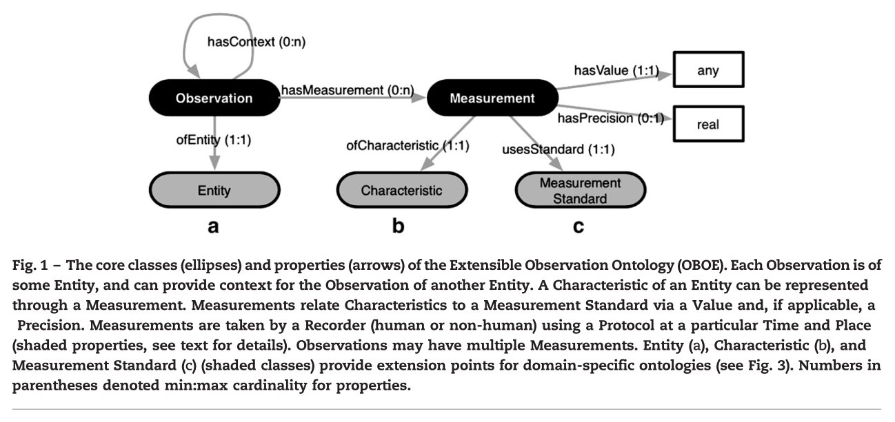
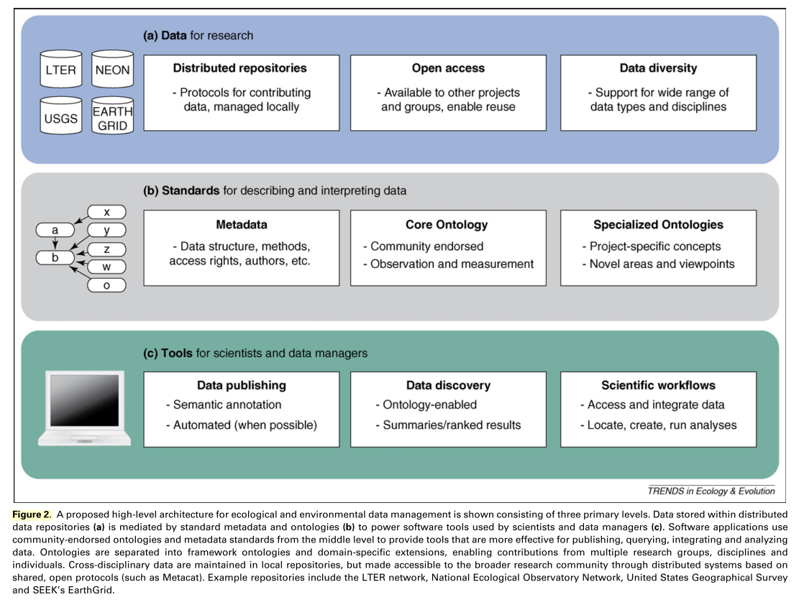

6.2 Ontologies
6.2.1 Williams, 2006
“Ontologies for ecoinformatics” (Williams, Martinez, and Golbeck 2006)
Key contribution: This is an early piece that gives an overview of what purpose ontologies may serve within ecology. They discuss it in particular relation to food webs within ecology, which are inherently complex with multiple definitions or system-specific interpretations for terms.
Key notes: Ontologies should be employed to describe the following characteristics of a dataset:
- Where, when and by who the data are collected
- A description of what was observed, including identity and traits of the organism
- Sampling protocol, including collection procedures and associated experimental manipulations
The architecture of the ontology can be designed intelligently such that the ontology is extensible, and allows for both system-specific interpretations as well as across-system relationships. For example, they discuss the importance of separating “entities” and “traits”.
The piece by Madin, 2008 (see Section 6.2.3) provides a more comprehensive overview of ontologies within ecology and should be referred to in conjunction with this piece.
6.2.2 Madin, 2007
“An ontology for describing and synthesizing ecological observation data” (Madin et al. 2007)
Key significance: Madin et al present a formal ontological framework within ecology (SEEK’s OBOE) that captures the essential semantic information of observational datasets, which will aid discovery and integration of data. The paper is structured:
- A discussion of ontologies and their relevance in ecology
- An introduction and overview of SEEK Extensible Observation Ontologies (OBOE)
- Several examples of use of OBOE for i) data discovery, ii) data summary, and iii) data integration
Notes:
Ontology - “A representation of the knowledge within a domain of interest, defined via the concepts within the domain as well as the properties and relationships among domain objects”
The work of the authors of the study is founded within the SEEK project. SEEK aims to develop technology to discover, access, integrate and analyze distributed ecological information, primarily through extension of EML to support semantic annotation of ecological datasets. This is done primarily through OWL-DL (description logic) ontologies.
Extensible Observation Ontology (OBOE) - aims to provide a core ontology framework for semantically annotating observational data sets. OBOE differs from other ecological ontologies in that it:
- Provides a robust framework for describing generic scientific observations
- Facilitates and structures the creation and sharing of domain-specific ontology extensions
- Provides discovery and integration services by semantic annotations to the ontology across variable domains of ecological observation data
The core structure of OBOE is diagrammed below:

The five key characteristics of OBOE are:
- Observations - formal statement that an entity of a particular type was observed
- Entities - all Observations are composed of exactly one Entity
- Measurements - Observations can be composed of Measurements, which represent measurable Characteristics of whatever entity is being observed
- Measurements are always associated with Observations
- Can have a variety of different characteristics, which are defined via the ofCharacteristic property
- Characteristics - “qualities” of the entity being observed
- Measurement standards - the units, scales, categories, catalogs and lists used when measuring characteristics. Two subclasses of Measurement standards exist:
- Entity naming standard - defines uniques names for unique identifies (e.g., “California”)
- Entity classification standard - entities associated with a classification have one or more instances (e.g., “red”, “5 m”)
- Additionally, for ratio or other complex units (e.g., ct / ha), the individual components may be assigned Measurement standards such that automatic conversions or data discovery may be performed.
The different classes of the above can be used to describe the data, and facilitate machine-intelligent discovery, data summary and data integration. For example, data searches for density data may be able to identify datasets consisting of explicitly reported “density” data, as well as datasets that report the constituents of “density” (e.g., count & area)
6.2.3 Madin, 2008
“Advancing ecological research with ontologies” (Madin et al. 2008)
Key significance: This article gives an overview of ontologies in ecology, with particular focus on:
- What issue they are capable of resolving – i.e., integration of heterogeneous data
- What ontologies are and the forms they take
- Ongoing efforts to advance ontologies within ecology
Ontologies provide a formal mechanism for defining terms and their relationships, and can improve the location, interpretation and integration of data based on its inherent meaning."
The issue: Lack of critical consideration of “concepts” within ecology complicates interpretation and synthesis of findings, as well as the location and reuse of existing datasets.
The solution: Ontologies provide a formal framework for establishing concepts within a discipline, and can resolve some of the issues that arise from multiple or nuanced interpretations of the same “concept” within ecology.
Notes: Ontologies within ecology are becoming more common, with three particular trends emerging:
- Domain-specific ontologies that focus on capturing terminology used in specialized scientific disciplines or communities, for example:
- Ontologies in Web Ontology Language (OWL) for food-web networks that are described in Williams 2006 (see Section 6.2.1).
- Semantic Web for Earth and Environmental Terminology (SWEET) - Maintained by NASA JPL, use OWL ontologies to improve data integration and access capabilities.
- Framework ontologies that define general concepts and relationships that others can extend when building domain ontologies, for example:
- Extensible Observation Ontology (OBOE) - component of the SEEK project; basic concepts and relationships for describing observational datasets (e.g., field, experimental, simulation and monitoring data). Compatible with EML, and its core concepts (i.e., “Entity”, “Characteristic”, and “Measurement Standard”) can all be extended with domain-specific ontologies.
- Classes for Environmental Data Exchange (CEDEX) - formal framework for describing monitoring and experimental data from the European consortium of long-term ecological research stations.
- Observations Data Model (ODM) or the Open Geospatial Consortium’s Observations and Measurements model OGC O&M - framework intended to facilitate the sharing and reuse of data within particular domains (hydrology projects for the first, geospatial work for the second); free-form extensibility of OBOE is not present.
- Other less formal approaches that identify and describe terms and concepts that are relevant to ecological research
- These commonly exist as thesauri that seek to standardize use of terms (and thus may aid in searching or browsing), but are not as effective as formal ontologies due to informal (and therefore a lack of logical relationships) nature.
The authors provide a nice figure that exemplifies the architectural framework of responsible management and archiving of data:

6.2.4 Reichman, 2011
“Challenges and opportunities of open data in ecology” (Reichman, Jones, and Schildhauer 2011)
Key significance: This piece focuses on how ecology (in some respects) has moved from a site-scale experimental field to one that is capable of large synthesis studies across broad spatial or temporal scales. They discuss issues of heterogeneity in data format and availability, and how to resolve them in order to perform synthetic analyses.
Key notes:
Reichman et al estimate that just 1% of ecological data that has been produced is available after publication of the associated results.
They note three major technological challenges to “open data” (a la, Michiner, 2006), namely:
- Data dispersion - Decentralized existence across a broad range of databases (either local or online)
- Heterogeneity - Lack of consistency in collection, formatting and reporting
- Provenance - Issues of origin and history (relevant for datasets, as well as data products)
Data dispersion:
- DataONE - A project designed to provide access to a number of central data repositories (e.g., Data Dryad) that facilitates data searching and access (also see Global Earth Observation System of Systems (GEOSS))
Heterogeneity:
- Data heterogeneity unlikely to be resolved due to specific research objectives and logistical constraints. Use of structured metadata such as EML, however, is efficient at aiding access and reporting of heterogeneous data.
Data provenance:
- Need scripted workflows that show quality control, processing and analysis of a dataset, particularly for derived datasets (e.g., meta-analyses or other secondary data objects)
- Unique identifiers (as DataONE) provides can be key for monitoring data provenance
Social considerations: Social constraints to formalized sharing and archiving data are likely greater than the technical challenges. A formal reward system for promoting open access data may be key to advancing open data within ecology.
6.2.5 Wickham, 2014
“Tidy data” (Wickham and others 2014)
Key significance: A formal description of Hadley’s “tidy data” concept. See also this online article, which is a bit more of a code-based explanation of tidy data.
Key notes: Tidy data has the following fundamental format: each variable is a column, each observation is a row, and each type of observational unit is a table.
Data tidying - as organizing datasets such to facilitate analysis
In organizing data, there is a general rule of thumb that it’s easier to describe functional relationships between variables (i.e., linear combinations of columns) rather than relationships between observations (rows); AND it’s easier to compare across groups of observations (rows) relative to between groups of variables (columns)
There are four basic verbs for data manipulation:
- Filter - subsetting or removing observations based on a condition
- Transform - adding or modifying variables
- Aggregate - collapsing multiple values into a single value
- Sort - changing the order of observations
Tidy data is particularly useful for modeling, and is a large part of why it is designed/promoted.
References
Williams, Richard J, Neo D Martinez, and Jennifer Golbeck. 2006. “Ontologies for Ecoinformatics.” Web Semantics: Science, Services and Agents on the World Wide Web 4 (4): 237–42. doi:10.1016/j.websem.2006.06.002.
Madin, Joshua, Shawn Bowers, Mark Schildhauer, Sergeui Krivov, Deana Pennington, and Ferdinando Villa. 2007. “An Ontology for Describing and Synthesizing Ecological Observation Data.” Ecological Informatics 2 (3): 279–96. doi:10.1016/j.ecoinf.2007.05.004.
Madin, Joshua S, Shawn Bowers, Mark P Schildhauer, and Matthew B Jones. 2008. “Advancing Ecological Research with Ontologies.” Trends in Ecology & Evolution 23 (3): 159–68. doi:10.1016/j.tree.2007.11.007.
Reichman, O James, Matthew B Jones, and Mark P Schildhauer. 2011. “Challenges and Opportunities of Open Data in Ecology.” Science 331 (6018): 703–5. doi:10.1126/science.1197962.
Wickham, Hadley, and others. 2014. “Tidy Data.” Journal of Statistical Software 59 (10): 1–23.